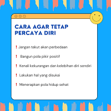

meningkatkan percaya diri
bangun pola pikir positif
kenali kekurangan dan kelebihan
fokus pada langkah atau perbuatan kecil
lakukan hal yang di sukai
berhenti membandingkan diri sendiri dengan orang lain
bergaul dengan orang orang yang positif
menerapkan pola hidup sehat
bergabung dalam kegiatan sosial
ini adalah link tips
